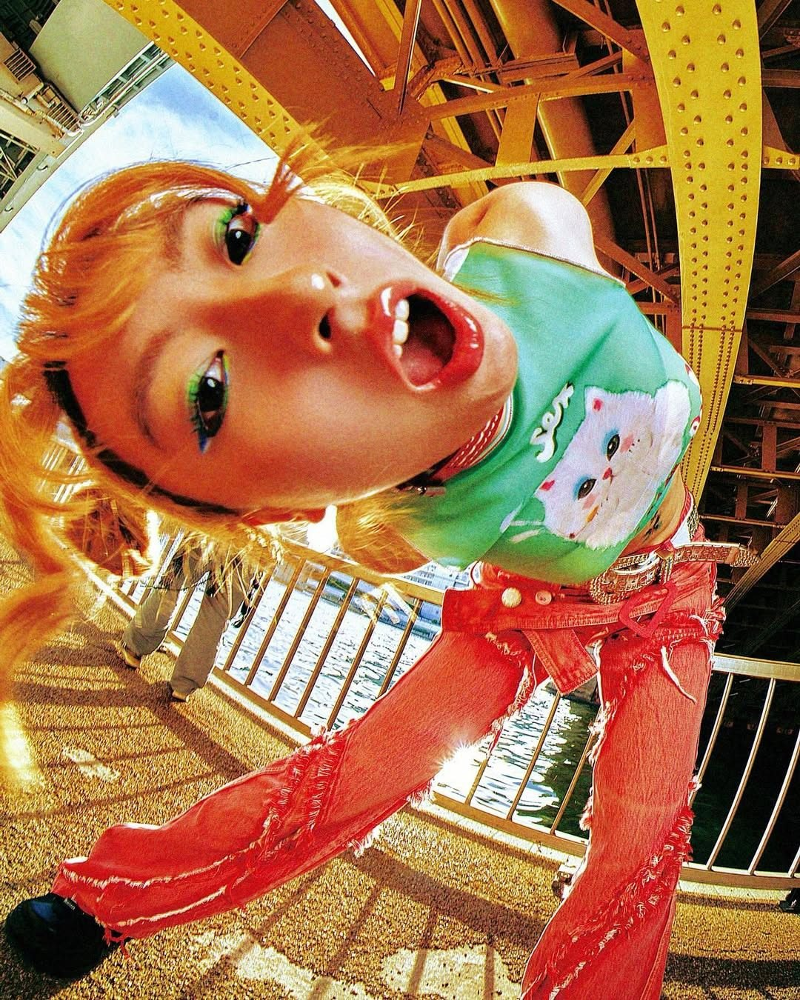

The Story of
… is an apparel brand proudly based in Marikina City.
The brand name comes from the Tagalog word “kúro-kurò”, or in English, “personal opinion”. Kúro-kurò the brand is mostly known for its cynical but earnest statement tees, catering to the Filipino youth of the metro.
Kúro-kurò’s visuals are heavily inspired by the street art of its hometown, and seasonally collaborates with local artists and designers for its products.

Meet the
Kúro-kurò always aims to platform local creatives and regularly shifts featured designers every season. Meet this season’s featured illustrators and designers behind Kúro-kurò’s apparel!

@lauren_ipson
Multimedia Artist
@hatdog.png
Graphic Designer
@pusanamaywig
Illustrator
@papyrusfont
Graphic Designer
@no2.paxsilica
Illustrator